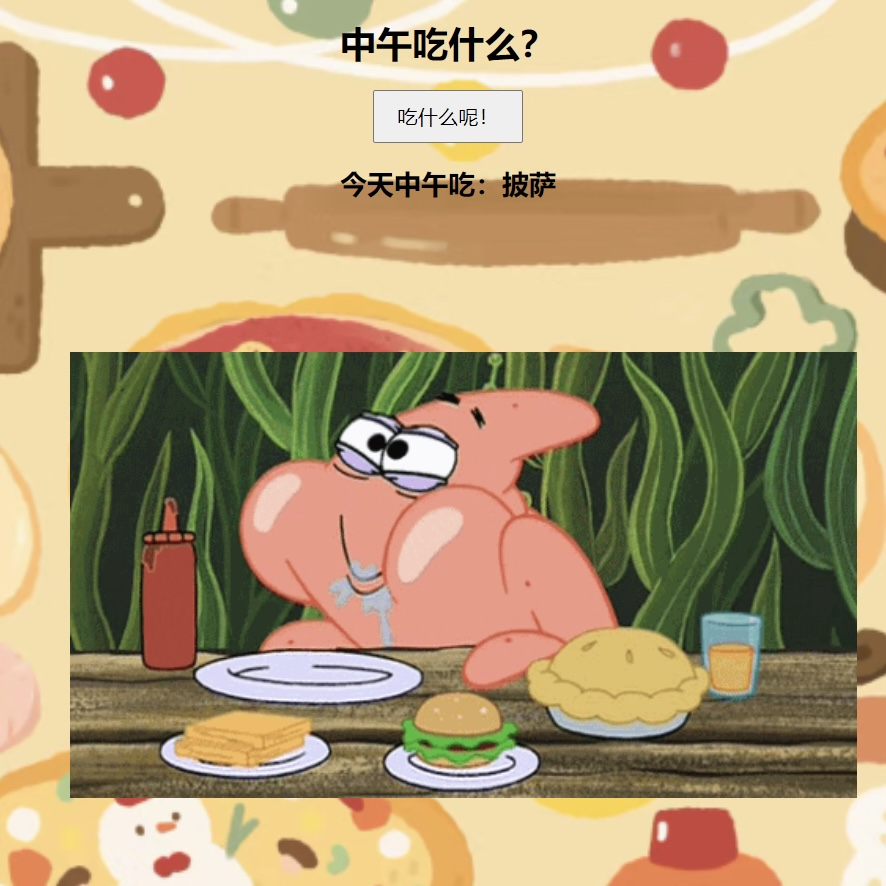

关于10秒钟“陷阱”
你有在互联网上陷入“十秒钟”陷阱吗？
比如说，在玩游戏的时候看十秒钟广告可以复活，在平台看十秒直播可以获得0.01元，看十秒钟广告可以免费读小说、用需要付费的笔刷等等……
这种现象被称为“广告触发奖励”（Ad-triggered rewards）或“奖励广告”（Reward ads）。
在游戏和其他应用程序中，开发者会通过向用户提供观看广告的机会来提高用户参与度，并以此作为盈利的一种方式。
用户观看广告后可以获得游戏内货币、复活机会、解锁内容等奖励，而开发者则会从广告商那里获得收益。
这种模式通常被视为一种广告变现策略，同时也为用户提供了免费获取虚拟商品或服务的途径，从而促进了应用的用户体验和留存率。
我用“陷阱”这个词来形容此现象，是想引起人们对这种现象的警惕和关注。它可能会导致人们对时间的不当利用，
因为在互联网世界里，人们往往会不知不觉地花费大量时间在短暂的活动上，而这些活动通常并不产生实质性的价值。
There are many interesting ways to spend our 'ten seconds' on the Internet!
原来十秒可以这样度过……
小游戏
10秒挑战游戏
《10秒挑战游戏》规则简单明了，只需按下按钮并努力通过手速和反应能力达到10.000秒，
因此非常容易上手，适合各个年龄段的玩家。玩家可以反复尝试，不断挑战自己的极限，
增加了游戏的可玩性和耐玩性；也可以与朋友或其他玩家进行比赛谁能按到更接近的数字。
你成功凝聚了自己十秒钟的注意力！

中午吃什么？
不知道今天中午吃什么？有选择困难症？花十秒钟来完成这个世纪难题吧！
打开这个小游戏就不用愁今天吃什么咯，让命运来帮你选择~有100种选项！
random dot
在这个随机出现小圆点的页面中，你是一个白色的可以自由移动的小圆点。
在这一刻忘记做人的烦恼，享受做一颗无忧忧虑的小圆点吧！
广告鼠标轨迹
利用鼠标轨迹绘制出各种抽象的线条、图案或具体的文字，创作自己的抽象充满广告的页面。
小彩蛋🎉
10秒钟还能干什么呢？是不是可以对你的朋友你的家人说一句真诚的祝福呀。
宝藏网站分享
盲盒网页
喜欢开盲盒的刺激吗？打开这个网站点击中间的小圈就会随机跳转到未知的网页，每点击一次就会出现不同的页面，都是超级棒的网站！
十秒钟带你发现一个高质量网站！
弹钢琴
用电脑上的键盘代替钢琴键或者用鼠标点击！可以录制，有社区可以和网友交流，请教曲子。
十秒钟弹奏一首钢琴曲吧！
遨游宇宙
可以看流星，遨游太阳系。可以选择不同视角：太阳系、跟随地球或是在地球上看，可以3D用鼠标拖动旋转观测宇宙！
听miku唱歌
ai音乐生成网站，是歌姬初音未来的声音，配色也是，非常小清新的画面和音乐，
只要点击屏幕就能生成音乐和随机动画。不同的点击或是滑动鼠标方式生成的音乐都不同！
十秒钟为自己创作一首歌吧！
生成自己的头像
开源的矢量风格头像生成器，可以搭配不同的素材组件，生成自己的个性化头像！
测测色感
一个有趣的色彩游戏，可以测试你对色彩的分辨及匹配能力，适合美术生和设计师测测自己的色感！
捏泡泡
赛博捏泡泡，你可以解压十秒，然后一直解压，捏很久很久，直到放松了自己的心情~
give me five
和全球的陌生人击掌！点击一下屏幕，如果同时间全世界有另外的人也点击了这个网站，你会获得和世界上其他国家的人赛博击掌的机会！
听小猫咪打呼噜
可以在线调制听小猫咪睡觉打呼噜，超级治愈的网站！戴上耳机享受更佳哦。
音乐可视化
听优美的钢琴音乐的同时可以看到音符在五线谱上的线条，充满视觉冲击！
sketch of three.js
超级厉害超级超级推荐的网站，通过js语言制作的非常精美的一些视觉作品和特效，可以享受不止十秒！
可以为网络艺术家和设计师提供新的思路和素材。
emoji kitchen
Google的emoji制作网站，可以选择左右两种emoji来定制一个组合成的emoji，十分有趣好玩！大胆的使用你的创意来制作emoji吧。
十秒钟可以制作自己的专属emoji！
赛博沙盘
网站的右侧展示了各种化学物质，如灰尘、火焰、石头、冰块、酸等等，可以任意选择在画面中添加，
打造属于自己的赛博沙盘世界。还会产生如燃烧、凝结、膨胀、生长等化学反应，非常有趣！
千亿像素看世界
为全球70余个城市创作了互联网城市名片，放大万倍体验中国各个城市，
点开你想去的地方吧！再无限的放大，放大，享受千亿像素镜头下的世界。
又是经典的贪吃蛇游戏…
不想再看广告了！！！
原来十秒还可以这样度过！
未完待续……
©Even